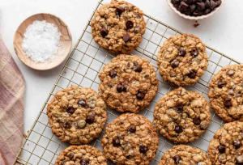

Oatmeal Chocolate Chip Cookies

Add a file named "cookies.png" next to this page to show the photo here.
Ingredients 0 of 11 gathered
Instructions 0 of 7 done
The finished cookies

Add a file named "cookies-finished.png" next to this page to show the photo here.